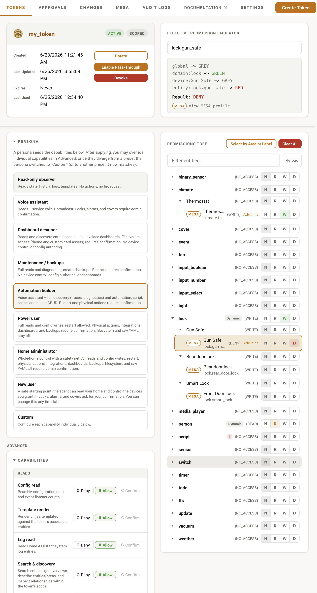
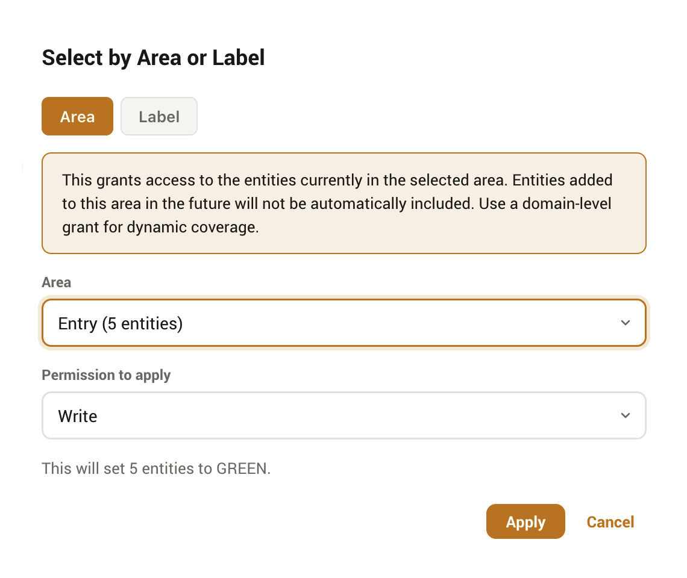
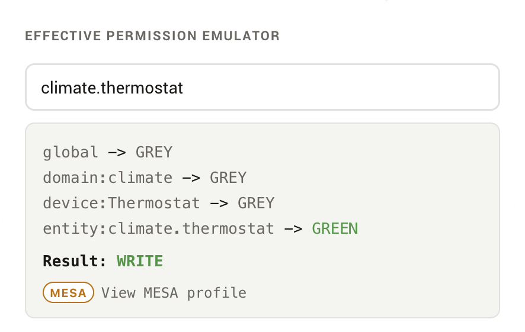
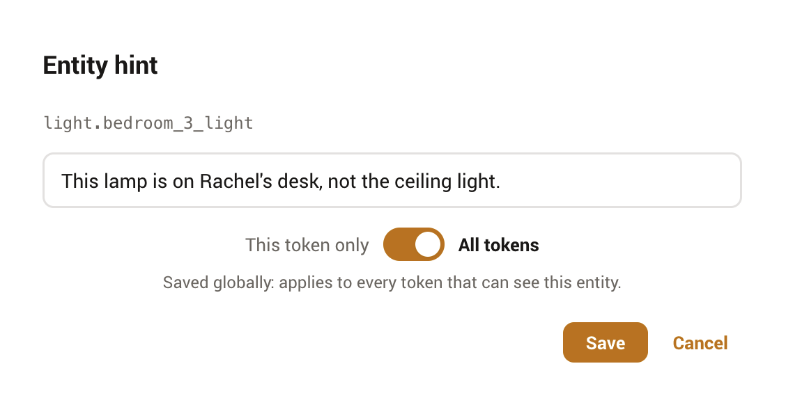

Panel guide
Everything ATM does happens in its sidebar panel. It has six tabs, Tokens, Approvals, Changes, MESA, Audit Logs, and Settings, plus a theme toggle. This guide walks through each, and the panel-only tools that make scoping a token quick.
Tokens
The Tokens tab lists every active token with its status and last use. From here you create tokens, open one to edit it, or launch the guided setup that walks a first-timer all the way to a tested connection (see Quick start).
Opening a token shows its detail page: the capability matrix, the permission tree, and lifecycle actions (rotate the raw value, revoke the token). The capability matrix is where you pick a persona or set individual capabilities to deny, allow, or confirm.

Painting the permission tree
The tree groups entities by domain and device. You rarely set every node: the usual pattern is to set a whole domain or device, leave the children grey so they inherit, then use RED to carve out exceptions. See Permissions for how the states resolve. Three panel tools make this faster.
Select by Area or Label
The Select by Area or Label button bulk-applies one state to a group of entities at once. Pick a tab (Area or Label), choose the group, choose the state to apply (Read, Write, Deny, or Remove grant), and ATM sets each matching entity.
It applies to the entities in the group now, not forever
Select-by grants access to the entities currently in the chosen area or label, one entity at a time. Entities added to that area or label later are not picked up automatically. For coverage that follows future entities, set a domain-level grant instead.

The effective-permission emulator
The emulator shows what ATM will actually decide for any entity. Type an entity ID, or click one in the tree or summary, and ATM runs the full two-pass resolver, then shows the result, which ancestor decided it, and the hint text if one is set. If a result surprises you, the path output names the ancestor that is overriding it.

The permission summary
A compact, sortable table of every node set to something other than GREY. It lists the node type, friendly name, ID, and current state. Clicking a row loads that entity into the emulator. An empty summary means no grants exist and the token has no access to anything.
Entity hints
After granting access to an entity, you can attach an optional hint that is surfaced to the connected AI, to clarify what an entity represents, for example "This lamp is on Rachel's desk, not the ceiling light." Hints are capped at 200 characters and come in two scopes:
- This token only
- A per-token hint, stored on the permission node. It is visible only to this token and takes precedence over a global hint.
- All tokens
- A global hint for the entity, applied to every token that can see it. Useful when the clarification is about the entity itself, not one agent's view of it.

Approvals
When a capability or a MESA entity is set to confirm, the held action lands in the Approvals queue. The tab badge shows the pending count, and a notification can deep-link straight to a specific approval. Each row shows the requesting token, the action, and a review payload (for file and YAML writes, a redacted before/after diff). Approve to run the saved action, or reject with an optional reason.
The panel keeps the view current by polling: the pending-count badge refreshes every few seconds and the queue itself every ten, so an approval appears shortly after the agent submits it and clears soon after you resolve it. There is no live socket; the panel is request-and-response, so a resolved approval is reflected on the next poll.

MESA
The MESA tab is where you author the per-entity safety profiles. It lists profiles by control mode and lets you edit profiles at the entity, domain, integration, area, and deployment-default levels, with canonical-tag autocomplete and a validation view for issues and orphans. The concept, the modes, and the editor's guardrails are covered on the MESA page.
Audit Logs
The Audit Logs tab is a filterable view of the request log: request ID, time, token, method, resource, outcome, and client IP. Filter by token or outcome to trace what an agent did. The log's retention and storage are described in Operations.
Changes
The Changes tab is the configuration history for everything an agent builds. It opens on a feed of recent create, edit, and delete actions across automations, scripts, scenes, helpers, dashboards, the raw configuration.yaml, and scoped file writes, and refreshes live as new changes land. Selecting a row opens that version's before/after diff directly, rendered as YAML for structured resources or as a line-highlighted text diff for raw configuration.yaml and file writes, with the resource's other versions in a timeline beside it so you can step through its history. Each pane has its own Restore this configuration button, so you re-apply the Before (to undo a bad edit) or the After (to re-apply the change) explicitly. A button is hidden when restoring it would do nothing: an empty pane, like the Before of a freshly created resource, or the After of the resource's latest version, which is already its current config; a raw snapshot too large to have been stored shows a notice and cannot be restored. Restore edits the resource if it still exists or recreates it (in place, under its original id) if it was deleted, recorded as a rollback you can itself undo. Storage and retention are described in Operations.
Settings
The Settings tab holds the global, deployment-wide options: the kill switch, logging controls, the rate-limit notification, the MESA mode, and the audit buffer size. These are detailed in Operations.